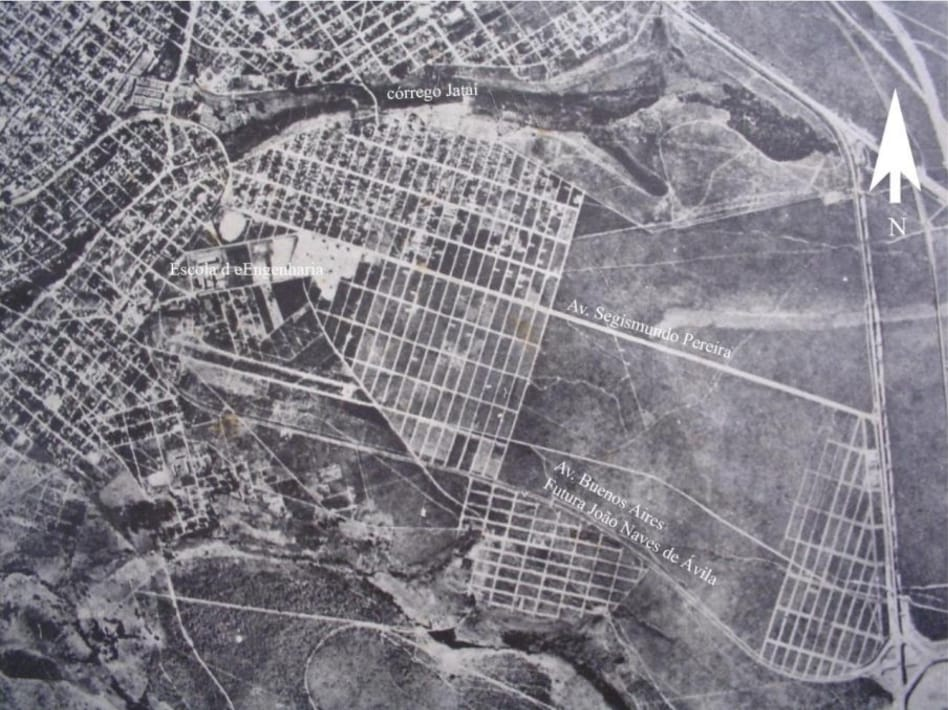
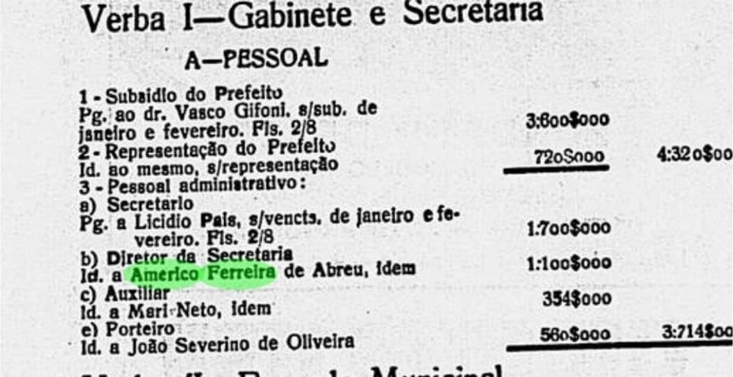
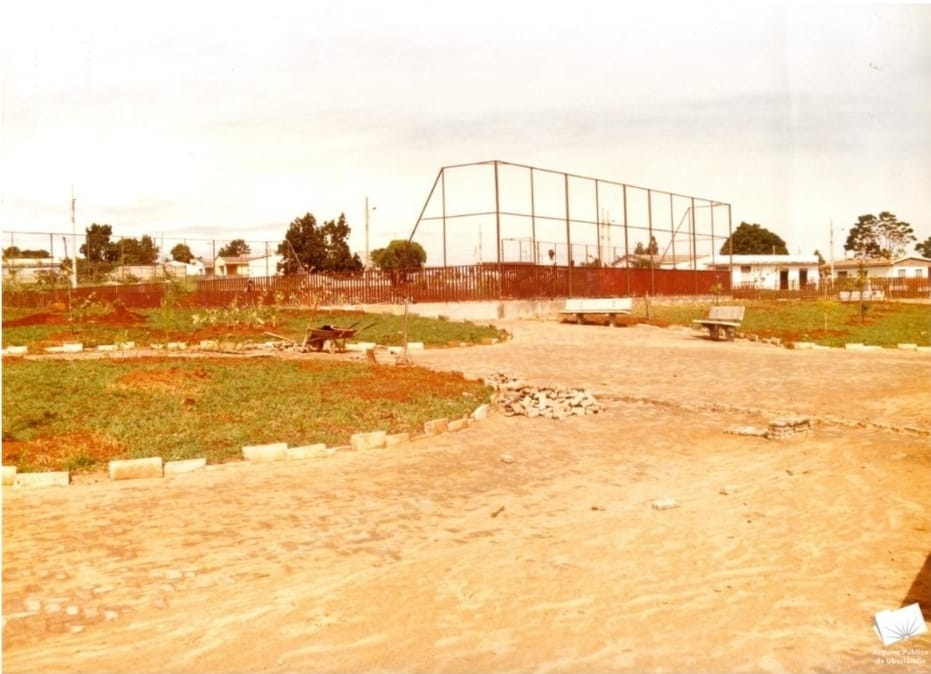
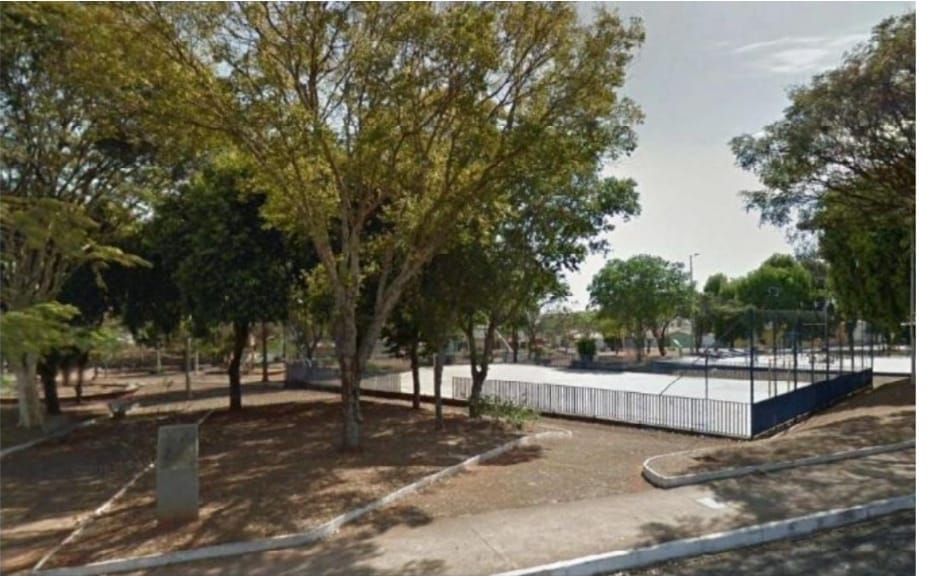

A história da praça
Parágrafo de abertura contando por que a praça importa.

1970Inicio de uma ideia: Anos 1970, o bairro cresce e a praça surge.
O Santa Mônica vivia uma expansão residencial, e a praça nasceu como área verde do bairro. Ela se tornou um ponto de referência para os primeiros moradores, numa época em que a região leste ainda tinha poucos equipamentos públicos.

1930 | 1950Motivo pelo nome da praça, quem foi Américo Ferreira de Abreu.
A praça homenageia um servidor da prefeitura. Ele começou como datilógrafo e protocolista em 1934, foi Secretário da Prefeitura e, entre 1949 e 1950, Chefe do Serviço do Patrimônio.

1980A paróquia e as festas.
A Paróquia Santa Mônica foi fundada em 1980, e a praça virou palco de quermesses, do Julinão, de feiras e de tapetes de Corpus Christi. Antes disso, era um campo de futebol de terra.

2007 | 2026A praça atualmente, uma praça que se transforma
Em 2008, um estudo a descreveu como a praça mais bem estruturada do bairro. Depois vieram a iluminação em LED (2021), a manutenção corretiva (2023), o teatro de rua da UFU e os playgrounds acessíveis (2025).
“Depoimento de um morador antigo sobre a praça.”
Nome, morador desde 19XX